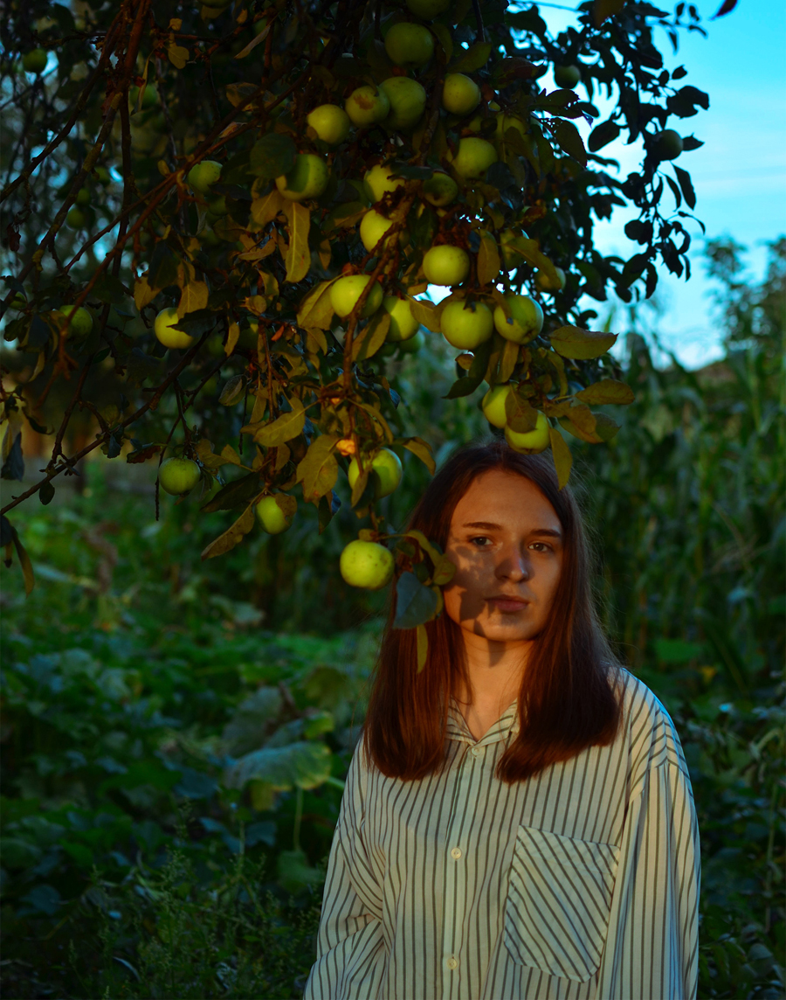

***
Привіт! Мене звати Юля Ганик.
Я студентка Львівської національної академії мистецтв.
Займаюсь фотографією, ілюстрацією, графікою,
пишу вірші, коли приходить муза.
Не уявляю свого життя без творчості.
Творю і витворяю для мистецтва!